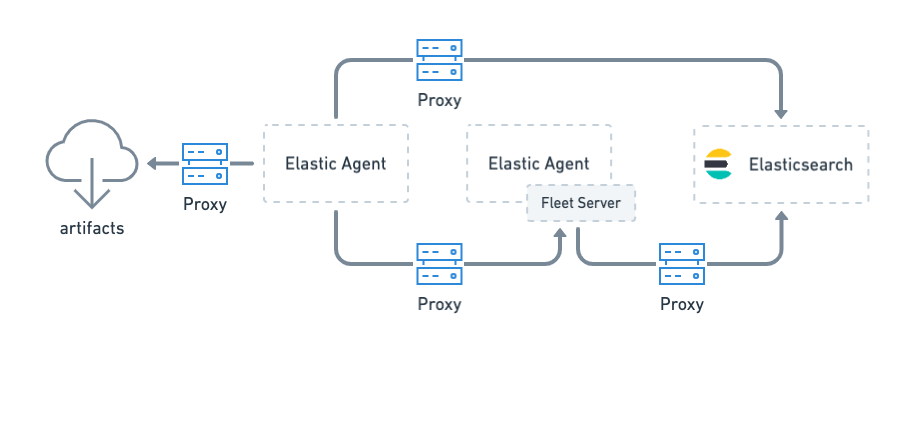
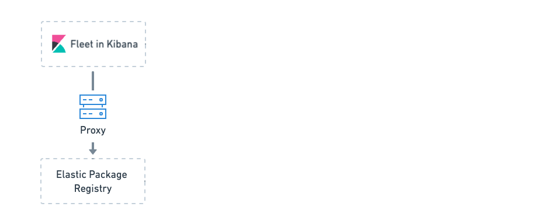

When to configure proxy settings
editConfigure proxy settings for Elastic Agent when it must connect through a proxy server to:
-
Download artifacts from
artifacts.elastic.cofor subprocesses or binary upgrades (use Agent binary download settings) - Send data to Elasticsearch
- Retrieve agent policies from Fleet Server
- Retrieve agent policies from Elasticsearch (only needed for agents running Fleet Server)

If Fleet is unable to access the Elastic Package Registry because Kibana is behind a proxy server, you may also need to set the registry proxy URL in the Kibana configuration.
